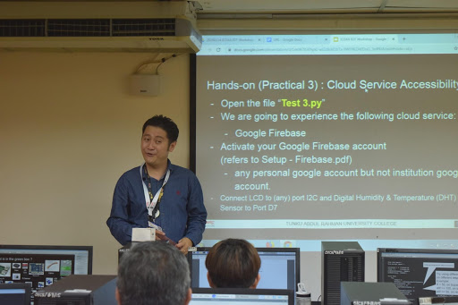
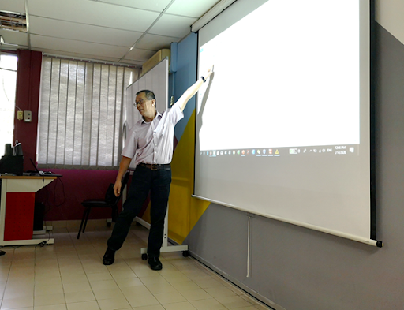

A look back at ICDXA 2020
On the 14th to 16th January 2020 TAR UC organized a conference called the International Conference on Digital Transformation and Applications (ICDXA 2020). This 3-day event covered a series of industry-driven workshops on the latest information technologies used in Industrial Revolution 4.0,talks given by keynote speakers from MDEC, IBM and Huawei, student showcases of their final year projects,pitching competitions by students, and research conferences conducted by intellectuals who came to the university to share their newest and latest findings in their respective fields.
Day 1
Workshop
On the very first day of the conference, which was on the 14th of January 2020, there were 5 workshops consisting of 3 different categories that were conducted. The first category was the Internet of Things, which composed of 2 workshops , the first being titled “Practical Approach to the Implementation of Industry 4.0 in the Manufacturing Industry 4.0”, conducted by Assoc. Prof. Dr. Lee Wah Peng, and the second was known as “Internet of Things: a Key Driver of Industry 4.0” overseen by Dr. Tew Yiqi.

Practical Approach to the Implementation of Industry 4.0 in the Manufacturing Industry

Internet of Things: a Key Driver of Industry 4.0
Dr. Tew Yiqi guiding participants through the Internet of Things Program.
Introduction to Big Data Analytics and Hadoop
Prof. Dr. Lim Tong Ming energetically conducting his Hadoop Workshop.

Introduction to Mobile Application Development(Android)
Conducted by our mobile expert Mr. Swee Kwee Teck.
Introduction to R
Participants thoroughly enjoying themselves at Data Science and Machine Learning workshop.
The next set of workshops that were held was under the Data Science and Analytics category, the first workshop was “Introduction to Big Data Analytics and Hadoop” conducted by Prof. Dr. Lim Tong Ming and Dr.Chin Wan Yoke, and the subsequent workshop being “Introduction to R for Data Science and Machine Learning” managed by Dr. Yu Yong Poh and Dr. Tan Yan Bin.
The final type of workshop lies under the category of Digital Innovations and Applications. There was only 1 workshop under this category which was “Introduction to Mobile Application Development(Android)”.This was conducted by none other than our mobile expert Mr. Swee Kwee Teck.
Day 2
Launching Ceremony, Keynote & Project Showcase
Opening Speech by the President of TAR UC Prof. Ir. Dr. Lee Sze Wei

Digital Transformation Landscape in Malaysia
Keynote by : MDEC


Big Data Analytics and Artificial Intelligence in Industry 4.0
Keynote by: IBM


The New Confluence of Technologies that Shape the Future
Keynote by: Huawei


The following day which was the main day of the event, The ICDXA 2020 conference, commenced with a warm, welcoming speech from 2 of our young and charismatic emcees that very morning, Mr.Cheng Chin Yeow and Ms Parnika Kaur. Afterwards, the conference was officiated with two awe-inspiring speeches from the highly esteemed Prof. Dr. Lim Tong Ming, the General Chair of ICDXA 2020, and the President of TAR UC himself Prof. Ir. Dr. Lee Sze Wei who proceeded to officiate the event by scanning his palm on the ipad soon after in order to heighten up the techno vibes of the event. Swiftly after that the ceremony was preceded by talks conducted by three keynote speakers, namely from established companies such as Malaysia Digital Economy Corporation (MDEC), IBM, and Huawei, covering contemporary topics on 5G, AI and BDA in Industry 4.0. These speakers are Dato’ Ng Wan Peng,Chief Operating Officer of Malaysia Digital Economy Corporation, Mr. Neo Teck Guan, Chief Marketing Officer of Huawei Cloud Asia Pacific Region,and Mr. Steven Hurley,Data Scientist and Solution Architect of IBM Supply Chain Engineering’s Analytic Solutions Group who all did an astoundingly amazing job in delivering the gist of all these innovations to the minds of the young people who attended the conference and also the other industry guests who were also present at the event.
Project Showcase


On that exact same day, fifty industry-driven digital innovations that carry business values were exhibited. Visitors consisting of lecturers, students and guests invited from the industry were all pouring in to view the multitude of projects showcased at the booths. There were all very practical final year projects such as the “Catering Service System” that is designed to revolutionize the methods and means of acquiring catering services and “Automated Deviant Detection Surveillance Using Artificial Intelligence and Computer Vision” which can possibly be implemented in CCTVs to reduce the human effort needed in monitoring subjects by using an intelligent camera capable of detecting abnormal activities. There was also the sight of judges roaming round the booths , in order to append the rightful score to each and every student who competed.
Apart from students showcasing their Final Year Projects, there were also others who participated in the pitching competition held upstairs. These contestants had to pitch to the judges regarding the solutions and products that they have developed, and at the end the most highly influential and well presented projects were selected as winners. All in all these string of events certainly did bring a great impact to all who participated as they managed to attain valuable criticism that are constructive in nature from the guests and judges which were specially invited from the industry.
Emcees Dr. Lim Yee Mei and Ms. Chin Chai Lim, Co-Chairs of Digital Innovation Showcase and Competitions Committee enthusiastically announcing the results.
Networking Dinner

Guests from the industry enjoying their meal at the networking dinner.
That very same evening, at the swimming pool located near the Sports Complex. A networking dinner was held with, all the guests,speakers,lecturers and students invited to join in the fun.There were all sorts of delicious Malaysian delicacies and pastries served that day such as laksa,satay,fried rice, nasi lemak and countless others.The atmosphere of that evening was boosted further with the appearance of 2 of our very own blossoming stars, which were a young pretty dancer by the name of Choy Mei Xin, and a gifted musician by the name of Marcus Kiong Chuan who sang and strum the guitar heart fully.


Guitarist Marcus Kiong Chuan and Ballerina Choy Mei Xin entertaining the guests with their stunning performances.
Day 3
Conference
Industrial Conference on Industry 4.0
On the third day of ICDXA 2020 conference,we held a multitude of industrial conferences, half of them were led by our very own cream of the crop professionals here at TAR UC, and the other half were led by industrial experts that were all meticulously hand picked and invited to enrich our functions. These conferences were categorized mainly into the 3 groups categorized below.
Digital Transformation, Lifecyle and Value Stream

Manufacturing Chain Integration
Manufacturing Automation


Research Conference


Later that afternoon four tracks of peer-reviewed industry and research papers were presented by their respective authors.This year-round is our first time ever hosting a research conference, and so we are glad to have received quite a substantial amount of papers from scholars all over the nation and also from lands beyond the continent. It’s just impressive to be able to bear witness, and hear for ourselves the thesis, theories and solutions proposed by some of these scholars, as some of them really did have jaw-droppingly good ideas that I bet could potentially transform the world for the better! As a token of appreciation, the presenters were each given a certificate and a special limited edition ICDXA 2020 jacket as souvenirs!
Over the course of these few days, the student committee under the guidance of Mr. Henry has also not fall short in offering their help and assistants.They without a single strand of doubt, certainly did play an integral role in carrying out the necessary preparations and shouldering the necessary roles that were needed for the event. At the heart of their ability to work in harmony and unison is a young influential bright man, by the name of Mr.Chuah Seong Rong. Mr. Seong Rong, chairman of the student committee, has been breaking his back wandering around the campus, in order to ensure that everything goes smoothly and as planned. Under his surveillance and leadership things were running smoothly, and guests were satisfied.


Student Committee Members, Clement Lee Ho Wen, Chuah Seong Rong, and Lew Soon Yang can be seen working diligently in order to carry out the necessary preparations needed to launch the conference.

A group photo of Dr. Lim Yee Mei and Ms. Voo Nyuk Mee, the Co-Chairs of Digital Innovation Showcase and Competitions Committee along with all the student committee members.

Student Committee Chairman Chuah Seong Rong seated at the center together with his trusty team of student helpers, and the Co-Chairs of Digital Innovation Showcase and Competitions Committee, Dr. Lim Yee Mei and Ms. Voo Nyuk Mee, seated behind.